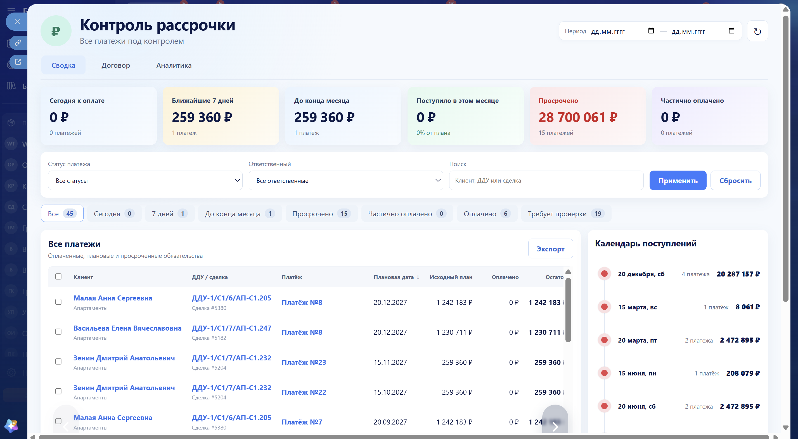
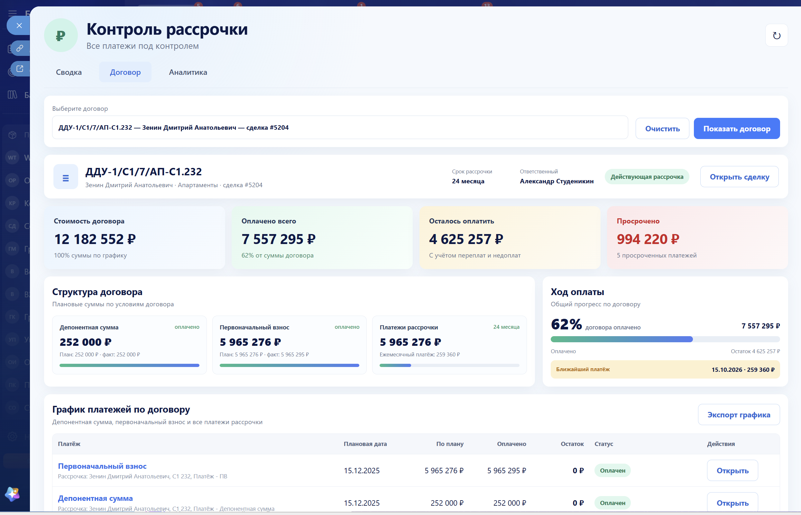
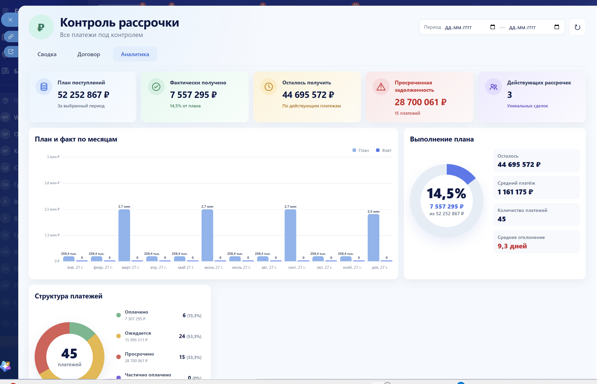
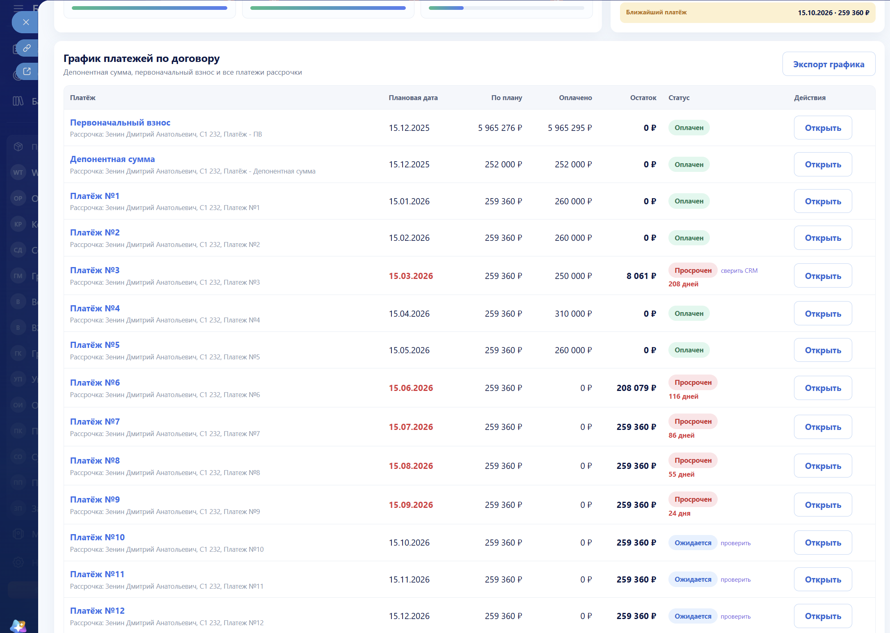
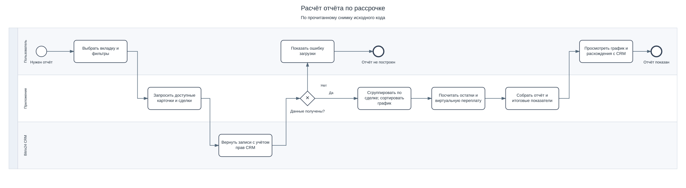
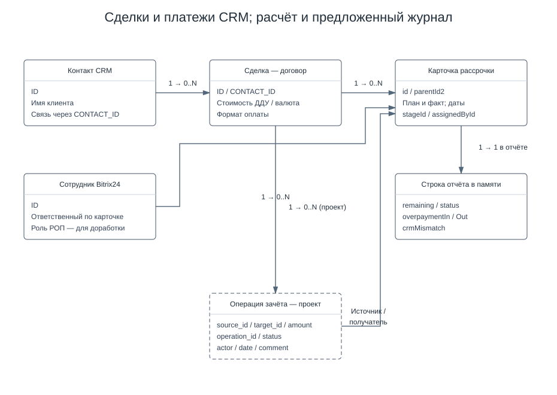
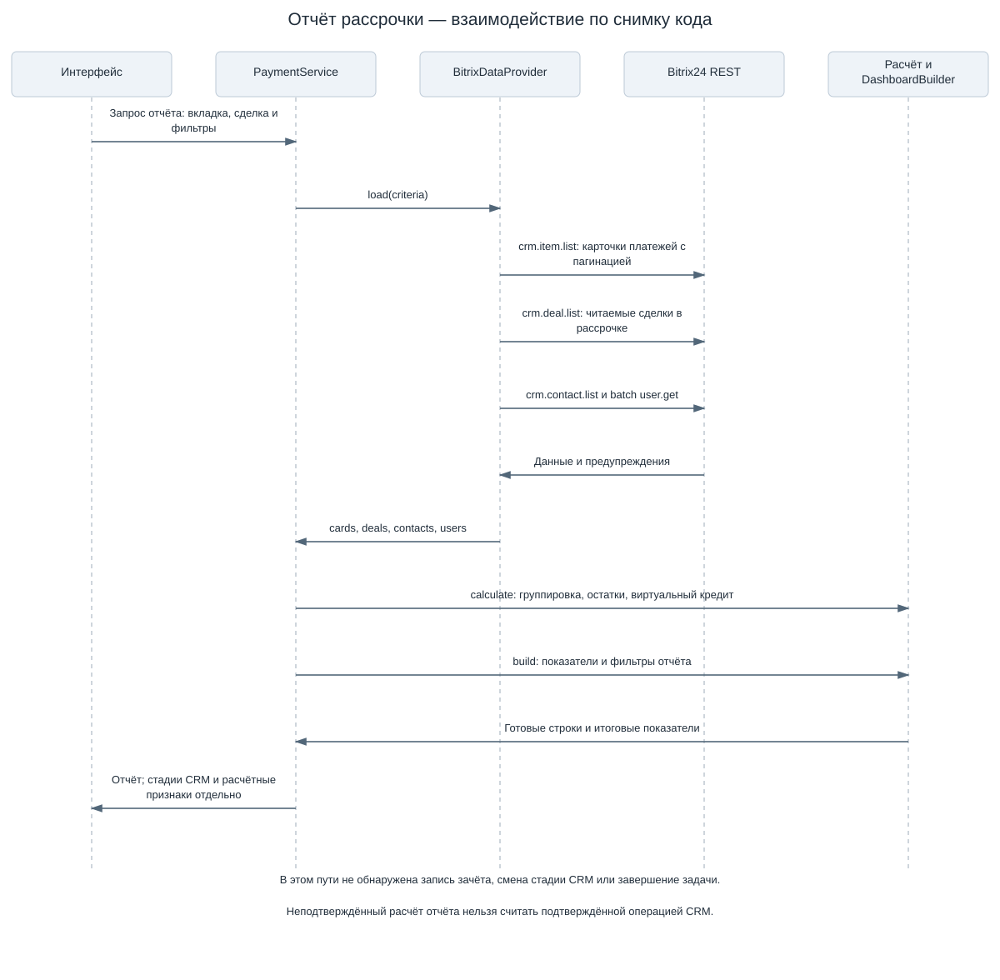
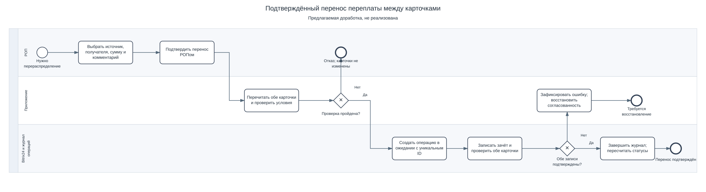

Частичная оплата сохраняет остаток
Факт оплаты сравнивается с планом. Наличие оплаты само по себе не означает, что обязательство погашено.
Аспекта / Кейс портфолио
Работа с платёжными данными Битрикс24: график, частичные оплаты, просрочка и сводная аналитика по договорам.
Один договор связан с несколькими платежами. Для контроля нужны согласованные правила расчёта: сколько запланировано, сколько получено, какой остаток просрочен и как учитывать переплату.




Факт оплаты сравнивается с планом. Наличие оплаты само по себе не означает, что обязательство погашено.
Для определения просрочки учитываются дата планового платежа и сумма, которую ещё нужно получить.
В прочитанном расчётном контуре переплата передаётся следующим платежам того же договора. Это расчёт отчёта без изменения карточек CRM.
Количество платёжных карточек не должно умножать стоимость договора. Сводные показатели группируются по идентификатору сделки.
Корректный отчёт начинается с точного определения: что считаем платежом, что — договором и когда обязательство действительно погашено.
Модель по прочитанному снимку кода: чтение данных CRM, группировка платежей, расчёт и построение представления.

Действующие сущности CRM и расчётные строки отчёта. Журнал подтверждённых зачётов выделен как предлагаемое расширение.

Получение платежей, сделок, контактов и пользователей; расчёт и формирование аналитики.

Описан отдельный сценарий выбора карточек, проверки доступной суммы, подтверждения РОПом и фиксации операции. Это проектная модель расширения, отделённая от текущего расчётного контура.
Сценарий расширения с повторной проверкой данных, защитой от дублей и сверкой результата записи.

План, факт оплаты и оставшееся обязательство рассматриваются отдельно.
Стоимость договора и суммы платежей рассчитываются на подходящем уровне данных.
Частичная оплата, просрочка и переплата имеют явные правила проверки.